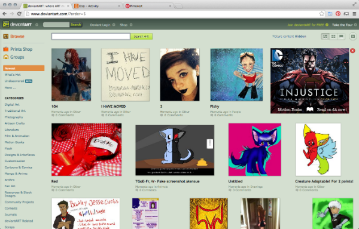
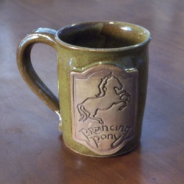
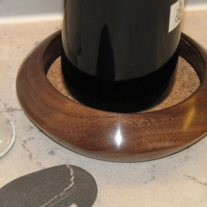
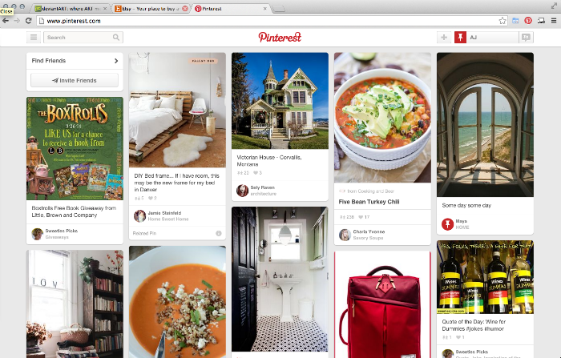
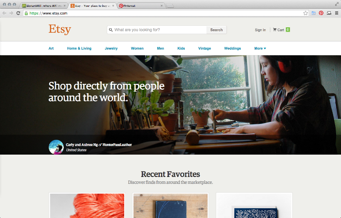
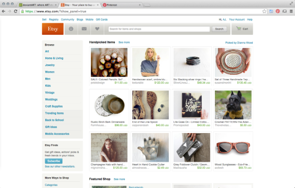
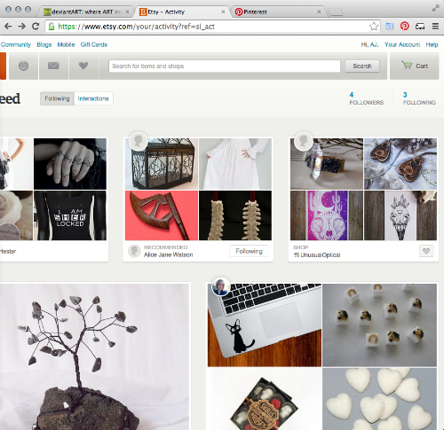
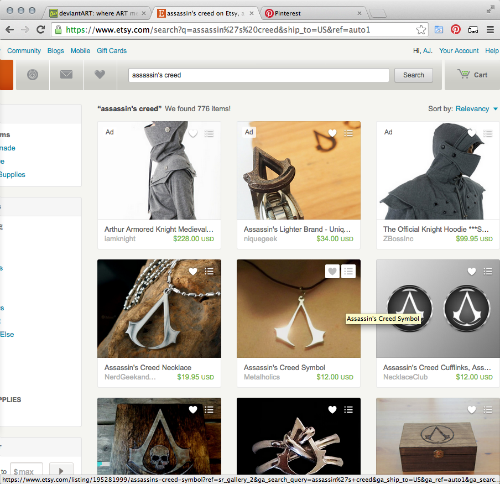

Technical Blog
deviantART is in my top three favorite websites. This is mostly because of what the site is, does, and offers. It's a huge online social network for artists, and it doesn't matter whether you create art for a hobby, as a student, as a professional, etc. This site doesn't define what they accept by how "talented" or "skilled" you are, which makes it a great portal for encouragement and inspiration. There are so many different types of artwork you can post, from traditional to digital, from sculpture to animation, from artisan crafts to comics and manga.
Because the homepage of deviantArt displays artwork that has been recently posted in a grid-like pattern, I'm drawn to the piece of work that has the most color or the brightest colors. When I take a step back, though, the first thing I notice is the "Newest" tab highlighted in orange on the left hand sidebar. That specific tab isn't the most important part of the site, but it draws your eyes towards the left side bar which houses all the genres and the browse feature, which I would say are both rather important.
Visually, I would describe this site as practical, organized, understandable, navigable, and [relatively] unimaginative. The fact that it's a little plain is kind of ironic, but because its focus and purpose is to showcase original artwork and connect with others through art, it makes sense that they put a bit more thought into the organization and layout than whether it looks super stellar.
The site solves the issue of keeping so many submitted pieces of original artwork organized. I figure, from the time I've spent on deviantART, more work is being added every day by the hundreds, yet everything is still pretty organized and the layout of the site is pretty easy to navigate. One thing you do have be kind of aware of is what type of art would be another's subcategory. Because the menus don't drop down from hovering, you have to click on the parent genre to get the children in a separate page, and so on. This takes up a little more time if you don't know where a certain category is because you have to keep going back and forth between pages.
On the other hand, another cool feature of this site is that you can buy others' artwork and sell your own. I haven't yet bought anything from others on the site, but I have a few pieces bookmarked!
Another of my favorite sites is Etsy.com. It is an online hub for buying and selling goods, including handmade goods, vintage goods, and craft supplies. You can find really cool things on here from all over the world. I've purchased a few things from individual sellers for myself, like this Prancing Pony mug from Functional Mud, as well as a few for gifts, like this wine coaster from Woodchuck's Wood.
When I pull up Etsy's homepage, it's rather bare/plain--even more so than deviantART's. When I have the page pulled to full screen, the spacing issue is real. I first notice the orange Etsy butotn in the top left hand corner, and I would say it's definitely not the most important bit of the site. And besides the main three boxes in the middle of the page all the empty space on the right. The space could be used more wisely. Also, when I go to my "Activity" button (just to the right of the "Etsy" button), the spacing is really off there, too. Some recommended collections/favorites are aok: they're rectangular and visible like they should be. However, some of them only show up as vertical slivers. And when you search for something in the search bar, when the page comes up and you want to make the page smaller, there's a point where the items listed on the left just disappear, which is really frustrating. Maybe it's my browser, but something's really off.
I would say it has the same positives and negatives as deviantArt (besides the ridiculous positioning and spacing issue). It's relatively easy to navigate, which is what it was meant to do so one can find different goods and shops, but it does the same thing in terms of no cursor-hovering menus (I tend to find those type of menus extremely convenient).
While these are in no real order, my third favorite site is Pinterest. It's another online social network where you can share images (and share links to images as well) and organize the images you collect in boards. It can be pretty time-consuming if you don't watch the time! Whether you serach for recipes, fitness, fashion, or home decor, I actually find it rather inspirational.
This site also features a grid-like system for images on the homepage. It's rather plain as well, but the way it works makes it less blah. The home page doesn't feature a menu, but you can find it in the left-hand corner next to the search bar. When I look at this page both up close and from farther away, I'm drawn to the red bits in the header (Pinterest button/logo and profile section). If you're trying to find something specific, the search bar is your best bet, but it's not red and it doesn't have any red elements, and neither does the menu button. I find this interesting because I'd probably make those the main focus, or at least equal the focus that's on the rest of the header.
There is a lot of information on this site, and I think trying to get from one place to another is pretty effortless (or maybe I've just been on this site too much!).
Update (08/31/2014): Etsy fixed their website!!!
- I was going to add images of the sites homepage because I just realized that
might be helpful to see if they changed, and it looks like Etsy's site already
has changed. I'll put a picture up here so you can see what it looks like now.
I'm sorry I don't have one from when I actually wrote this post! I'll also put
pictures of the other two sites in the body of the post itself since they
haven't changed.
- I also realized that the Etsy homepage I was talking about in this post was the
homepage I see when I'm signed in.
-Etsy homepage.
-Etsy homepage when I'm signed in
-Etsy activity/notification page (the grids are fixed--normal
sized and not vertically squished!)
-Etsy search page (notice that nothing is getting cut off on the
right side even though I've made the window smaller!)
- Also, I've just noticed that the Pinterest homepage requires you to sign in
before you can use the site. I find that rather annoying (even though I have an
account). Why couldn't someone just look at the pictures? Geez.